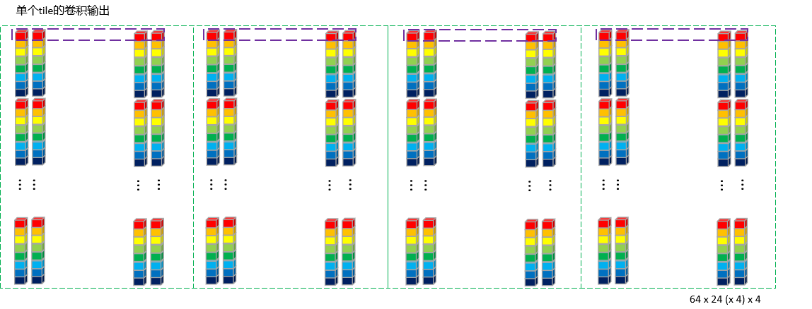

前言
主要针对CPU后端，基于/source/backend/cpu/compute/ConvolutionWinograd.cpp源码展开。
部分章节以输入大小：1 x 8 x 224 x 224，权重大小: 16 x 8 x 3 x 3, 输出1 x 16 x 222 x 222 为例进行辅助说明。
MNN卷积相关运算统一使用CAFFE_C4格式，即MNN自创的NC4HW4格式，具体排布介绍：NC4HW4数据排布
Winograd适用条件
canUseWinograd函数，具体代码如下：
bool ConvolutionWinograd::canUseWinograd (const Convolution2DCommon *common) if (common->kernelY () != common->kernelX () || common->kernelY () <= 1 ) { return false ; } if (common->dilateX () != 1 || common->dilateY () != 1 ) { return false ; } if (common->strideX () != 1 || common->strideY () != 1 ) { return false ; } return true ; }
总结出来就是:
必须是kernelX = kernelY的卷积核，并且卷积核尺寸大于1x1。1x1的卷积核MNN使用的是Convolution1x1Strassen 实现，暂且按下不表。
不适用于dilateConv。
不适用于stride != 1的conv。
选取最佳的Unit
bestWinogradUnit函数，具体代码如下：
int ConvolutionWinograd::bestWinogradUnit (const Convolution2DCommon *common, const Tensor *inputTensor, const Tensor *outputTensor, int threadNumber, Backend* b) auto core = static_cast <CPUBackend*>(b)->functions (); int ow = outputTensor->width (); int oh = outputTensor->height (); int oc = outputTensor->channel (); int ePack, hPack, lPack; core->MNNGetMatMulPackMode (&ePack, &lPack, &hPack); int unit2 = UP_DIV (ow * oh, ePack * threadNumber); int maxUnit = (int )::sqrtf ((float )unit2); maxUnit = std::min (maxUnit, CONVOLUTION_WINOGRAD_MAX_UNIT); maxUnit = std::max (maxUnit, CONVOLUTION_WINOGRAD_MIN_UNIT); int ic = inputTensor->channel (); auto kernelSize = common->kernelY (); int unit = 0 ; float maxRate = 0.0f ; float originCost = (float )ow * oh * (float )ic * oc * kernelSize * kernelSize; std::set<int > supportSu{4 , 6 , 8 }; for (int u = CONVOLUTION_WINOGRAD_MIN_UNIT; u <= maxUnit; ++u) { auto sui = u + kernelSize - 1 ; auto su = (float )sui; if (supportSu.find (sui) == supportSu.end ()) { continue ; } if (nullptr == core->chooseWinoDestTransform ((int )su, u)) { continue ; } float penalty = (su * su) / (float )(kernelSize * kernelSize) * 0.12f ; float winogradCost = (2 * su * su * ic + su * su * ic * oc + (su + u) * u * oc) * (UP_DIV (ow, u) * UP_DIV (oh, u)); float reduceRate = originCost / winogradCost - penalty; if (reduceRate > maxRate) { maxRate = reduceRate; unit = u; } } if (maxRate < 1.0f ) { return 0 ; } return unit; }
经确认，MNN中计算Cost并不是使用乘加次数的度量方式，而是访存量的度量方式，即一次winograd计算中对内存读取的次数；
上述代码的大致逻辑就是遍历u n i t ∈ [ 2 , 8 ] unit\in[2,8] u ni t ∈ [ 2 , 8 ] originCost和winogradCost的比值，寻找比值的最大值，来确定最佳unit；
但是在计算输出转换是(su + u) * u * oc，但我觉得应该是(su + u) * su * oc才对；
unit选取其实是个权衡值，在内存访问次数和乘法次数之间存在一定权衡，unit小的乘法次数少，但是内存访问次数多，反之反之;
penalty是个惩罚值，具体作用可以看这个issue 。
生成变换矩阵
通过WinogradGenerater类实现，主要根据unit和kernelSize大小计算三个转换矩阵:G，A，B，根据中国余数定理 求解同余方程组，获取变换矩阵。暂且按下不表
权重变换
以unit=6为例
原始权重Tensor大小16 \color{Red}16 16 8 \color{Blue}8 8 3 \color{Green}3 3 3 \color{Green}3 3 16 \color{Red}16 16 8 \color{Blue}8 8 8 \color{Green}8 8 8 \color{Green}8 8 NC4HW4重排后的Tensor大小 64 \color{Green}64 64 4 \color{Red}4 4 8 \color{Blue}8 8 1 \color{Blue}1 1 4 \color{Red}4 4
重排后每个维度含义如下：
变换矩阵G G G 8 x 3，G T G^T G T 3 x 8，根据变换公式，每个3 x 3卷积核变换后的大小为 8 x 8 = 64，将这64个值拆分到64个batch（N维度）；
卷积核个数16按照C4进行拆分，每个C4 pack排布到W维度，C维度为4；
单个卷积核通道数8排布到H维度；
这样做的目的是便于后面MatMul时，指令集可以一次性对同一个输入 的4个不同卷积核 的单个通道 进行乘法计算。在H方向累加就可以实现同一个输入 的不同卷积核 的卷积结果输出。示意图如下：
具体代码如下：
void WinogradGenerater::transformWeight (const Tensor* weightDest, const Tensor* source, bool ciFirst) std::shared_ptr<Tensor> GT (Math::Matrix::create(mG->length(0 ), mG->length(1 ))) ; Math::Matrix::transpose (GT.get (), mG.get ()); int ci = source->length (1 ); int co = source->length (0 ); int kernelCount = source->length (2 ); int unitCi = weightDest->length (3 ); int unitCo = weightDest->length (4 ); auto alpha = mB->length (0 ); if (ci % unitCi != 0 || co % unitCo != 0 ) { ::memset (weightDest->host<float >(), 0 , weightDest->size ()); } std::shared_ptr<Tensor> M (Math::Matrix::create(kernelCount, alpha)) ; std::shared_ptr<Tensor> K (Math::Matrix::createShape(kernelCount, kernelCount)) ; std::shared_ptr<Tensor> K_Transform (Math::Matrix::create(alpha, alpha)) ; auto weightPtr = source->host<float >(); auto KTransformData = K_Transform->host<float >(); int lCi = unitCo; int lCo = 1 ; if (ciFirst) { lCi = 1 ; lCo = unitCi; } for (int oz = 0 ; oz < co; ++oz) { auto srcOz = weightPtr + oz * ci * kernelCount * kernelCount; int ozC4 = oz / unitCo; int mx = oz % unitCo; auto dstOz = weightDest->host<float >() + weightDest->stride (1 ) * ozC4 + mx * lCo; for (int sz = 0 ; sz < ci; ++sz) { int szC4 = sz / unitCi; int my = sz % unitCi; auto srcSz = srcOz + kernelCount * kernelCount * sz; K->buffer ().host = (uint8_t *)srcSz; Math::Matrix::multi (M.get (), mG.get (), K.get ()); Math::Matrix::multi (K_Transform.get (), M.get (), GT.get ()); auto dstSz = dstOz + szC4 * weightDest->stride (2 ) + my * lCi; for (int i = 0 ; i < alpha * alpha; ++i) { *(dstSz + i * weightDest->stride (0 )) = KTransformData[i]; } } } }
分块处理
常用术语
unit：Winograd输出FeatureMap的分块大小。
假设卷积输出的Tensor大小为: 1 x 16 x 222 x 222，kernel size = 3，unit = 6，则输出按照6 x 6大小分块输出，输入中就使用8 x 8大小分块。简单说就是利用输入的8 x 8块计算输出的6 x 6块。那么222 x 222 就可以分为 37 x 37个块大小。
epack：分组单位，固定值，对于不同的后端设置为不同的值。获取方式如下：
int ePack, lPack, hPack;core->MNNGetMatMulPackMode (&ePack, &lPack, &hPack);
tile： 按照uint进行分块后，再对所有块进行分组的个数。
如上面37 x 37个块，如果epack = 24，则tile =（37 x 37 + 24 - 1）/ 24 = 58。保证所有块都能处理到，因此采用向上取整。
分块原理
分块原理如下图所示：
分块流程确定后，实操过程并不是把所有输入tile都处理完，才执行后面的乘加及输出变换，这样的内存开销太大了，不可取。tile为单位进行处理，每个tile进行输入变换、乘加、输出变换。将结果逐个写入到输出Tensor中。另外，由于tile之间是完全独立的，也方便使用多线程处理。
1 x 2 x 224 x 224 x 4的输入，按照tile划分后变形为(NCHW): 1x 2 x 58 x tileC4 Pack后的值，在卷积过程中是要一起累加到输出结果的。因此实际计算的时候，按照一次处理tile的两个通道进行计算。一共循环处理58次。
buffer分配
延续前面例子的尺寸情况
具体代码如下：
mTempBuffer.reset (Tensor::createDevice<uint8_t >({threadNumber, ePack, ic4 + oc4, pack * alpha2, bytes})); mTransformMidBuffer.reset (Tensor::createDevice<uint8_t >({threadNumber, (1 + ic4 * ePack), alpha2, pack, bytes})); mGemmMidBuffer.reset (Tensor::createDevice<uint8_t >({threadNumber, alpha, ePack * UP_DIV (srcCount, pack) * pack, bytes}));
参数的具体含义如下：
ePack = 24表示一个tile有24个块。
ic4 = 2，oc4 = 4，分别代表CAFFE_C4格式下的输入，输出通道数。
pack = 4表示4个通道为一组pack到一起。
alpha2 = 8 x 8 = 64，表示单个输入块的数据个数。
bytes=4，处理float类型，4个字节。
3个buffer的情况如下：
mTempBuffer：单线程为例，分配的大小为 1 x 24 x (2 + 4) x (4 x 64) x 4bytes。其中，
1 x 24 x 2 x (4 x 64) x 4bytes用于存储输入变换后的数据。1 x 24 x 4 x (4 x 64) x 4bytes用于存储输出变换后的数据。
mTransformMidBuffer：单线程为例，分配的大小为 1 x 2 x 64 x 4 x 4bytes，用于存储单个输入块的两个通道变换后的数据。
mGemmMidBuffer：单线程为例，分配的大小为1 x (24 x 8) x 4bytes，单个乘加模块需要的输入数据，即：24 x 8个float，至于这24 x 8是以怎样的形式取得，下文有阐述。
通俗来说就是针对每个输出通道，一次处理24个输入的8通道数据。乘加后得到24个输出。循环64次，得到单个输出通道中一个tile的所有输出（未做输出变换前）： 24 x 8 x 8。
输入变换
由上面一节可知，一次处理2个通道的tile，即: 2 x 24 x 8 x 8 x4的float数据量。
2个通道的块处理的核心代码部分见这里，外面会循环24次：
for (int z = 0 ; z < ic_4; ++z) { auto srcZ = srcStart + z * sourceZStep * bytes; for (int i = 0 ; i < srcUnit; ++i) { auto srcFloatPtr = (const float *)(srcZ + i * iw * pack * bytes); auto dstFloatPtr = (float *)(midBuffer1 + i * pack * bytes); mSourceTransform (srcFloatPtr, dstFloatPtr, pack, pack * srcUnit); } auto dstZ = dst_x + z * dstZStep * bytes; for (int i = 0 ; i < srcUnit; ++i) { auto srcFloatPtr = (const float *)(midBuffer1 + i * srcUnit * pack * bytes); auto dstFloatPtr = (float *)(dstZ + i * unitStep * bytes); mSourceTransform (srcFloatPtr, dstFloatPtr, pack, unitStep * srcUnit); } }
mSourceTransform函数基于unit而有不同的实现，这里贴出8 x 8的实现：
#define LOAD8 \ Vec4 s0 = Vec4::load(srcBlock + 0 * srcStep); \ Vec4 s1 = Vec4::load(srcBlock + 1 * srcStep); \ Vec4 s2 = Vec4::load(srcBlock + 2 * srcStep); \ Vec4 s3 = Vec4::load(srcBlock + 3 * srcStep); \ Vec4 s4 = Vec4::load(srcBlock + 4 * srcStep); \ Vec4 s5 = Vec4::load(srcBlock + 5 * srcStep); \ Vec4 s6 = Vec4::load(srcBlock + 6 * srcStep); \ Vec4 s7 = Vec4::load(srcBlock + 7 * srcStep); static void _sourceTransformUnit8x8(const float * srcBlock, float * dstStart, size_t srcStep, size_t dstStep) { LOAD8; Vec4 m0 = s0 * 36.f - s2 * 49.f + s4 * 14.f - s6; Vec4 m1 = (s1 + s2) * 36.f - (s3 + s4) * 13.f + (s5 + s6); Vec4 m2 = (s2 - s1) * 36.f + (s3 - s4) * 13.f + (s6 - s5); Vec4 m3 = s1 * 18.f + s2 * 9.f - s3 * 20.f - s4 * 10.f + s5 * 2.f + s6; Vec4 m4 = s2 * 9.f - s1 * 18.f + s3 * 20.f - s4 * 10.f - s5 * 2.f + s6; Vec4 m5 = s1 * 12.f + s2 * 4.f - s3 * 15.f - s4 * 5.f + s5 * 3.f + s6; Vec4 m6 = s2 * 4.f - s1 * 12.f + s3 * 15.f - s4 * 5.f - s5 * 3.f + s6; Vec4 m7 = s3 * 49.f - s1 * 36.f - s5 * 14.f + s7; Vec4::save (dstStart + 0 * dstStep, m0); Vec4::save (dstStart + 1 * dstStep, m1); Vec4::save (dstStart + 2 * dstStep, m2); Vec4::save (dstStart + 3 * dstStep, m3); Vec4::save (dstStart + 4 * dstStep, m4); Vec4::save (dstStart + 5 * dstStep, m5); Vec4::save (dstStart + 6 * dstStep, m6); Vec4::save (dstStart + 7 * dstStep, m7); }
处理一行输入数据，调用了两次mSouceTransform，其中每次mSouceTransform里面做的是:
LOAD8：指令集连续加载一个块中一行的8个C4 Pack的数据（可以视为一个行向量），放到8个128bit的寄存器s0 - s7中；
右乘变换矩阵B B B m0 - m7；
m0-m7转置（+ n * dstStep按列存放）后，输出到临时的mTransformMidBuffer中。
其实MNN对原始变换公式做了等价调整，这样调整能够便于代码复用，不用同时保留矩阵B B B B T B^T B T
B T D B = ( ( D B ) T B ) T B^TDB=((DB)^TB)^T
B T D B = (( D B ) T B ) T
一行处理完毕后，循环8次，将8行数据全部处理完，即完成了8x8一个块的变换。然后循环2次，把一个块(block)的2个C4 Pack通道也处理完毕，保存到mTempBuffer中，保存排布是这样的：
MatMul + Add 乘加计算
单个tile的输入转换完毕后，可以准备乘加计算了。MNN源码如下：
for (int i = 0 ; i < srcUnit2; ++i) { auto srcTemp = (const float *)(_srcOrigin + i * ic_4 * pack * xC * bytes); auto _dstFloatPtr = (float *)(_dstOrigin + i * dc_4 * pack * xC * bytes); auto _weightFloatPtr = (const float *)(weight + i * mResource->mWeight->stride (0 )); core->MNNPackC4ForMatMul_A ((float *)gemmBuffer, &srcTemp, info, el); core->MNNPackedMatMul (_dstFloatPtr, (float *)gemmBuffer, _weightFloatPtr, parameters.data (), nullptr , nullptr ); }
根据上面的转换图可知，tile中的数据排布成64行，每行24个C4 Pack，一共2个通道。
首先最外层for循环srcUint2 = 8 x 8 = 64，即逐行遍历。每行的处理包括MNNPackC4ForMatMul_A 及 MNNPackedMatMul两个步骤：
此处代码为MNN release_1.1.7版本（为了便于跟上述逻辑连贯），后续版本AVX加速代码有更新(AVX有256位寄存器，可以从C4 Pack 升到C8 pack )
_AVX_MNNPackC4ForMatMul_A函数核心代码（AVX指令集加速版本）如下：
#define MAIN_COMPUTE \ auto s00 = _mm_loadu_ps(srcX + 0 * pOffset); \ auto s01 = _mm_loadu_ps(srcX + 1 * pOffset); \ auto s02 = _mm_loadu_ps(srcX + 2 * pOffset); \ auto s03 = _mm_loadu_ps(srcX + 3 * pOffset); \ auto s10 = _mm_loadu_ps(srcX + 4 * pOffset); \ auto s11 = _mm_loadu_ps(srcX + 5 * pOffset); \ auto s12 = _mm_loadu_ps(srcX + 6 * pOffset); \ auto s13 = _mm_loadu_ps(srcX + 7 * pOffset); \ auto s20 = _mm_loadu_ps(srcX + 8 * pOffset); \ auto s21 = _mm_loadu_ps(srcX + 9 * pOffset); \ auto s22 = _mm_loadu_ps(srcX + 10 * pOffset); \ auto s23 = _mm_loadu_ps(srcX + 11 * pOffset); \ auto s30 = _mm_loadu_ps(srcX + 12 * pOffset); \ auto s31 = _mm_loadu_ps(srcX + 13 * pOffset); \ auto s32 = _mm_loadu_ps(srcX + 14 * pOffset); \ auto s33 = _mm_loadu_ps(srcX + 15 * pOffset); \ auto s40 = _mm_loadu_ps(srcX + 16 * pOffset); \ auto s41 = _mm_loadu_ps(srcX + 17 * pOffset); \ auto s42 = _mm_loadu_ps(srcX + 18 * pOffset); \ auto s43 = _mm_loadu_ps(srcX + 19 * pOffset); \ auto s50 = _mm_loadu_ps(srcX + 20 * pOffset); \ auto s51 = _mm_loadu_ps(srcX + 21 * pOffset); \ auto s52 = _mm_loadu_ps(srcX + 22 * pOffset); \ auto s53 = _mm_loadu_ps(srcX + 23 * pOffset); \ _MM_TRANSPOSE4_PS(s00, s01, s02, s03); \ _MM_TRANSPOSE4_PS(s10, s11, s12, s13); \ _MM_TRANSPOSE4_PS(s20, s21, s22, s23); \ _MM_TRANSPOSE4_PS(s30, s31, s32, s33); \ _MM_TRANSPOSE4_PS(s40, s41, s42, s43); \ _MM_TRANSPOSE4_PS(s50, s51, s52, s53); #define STORE_TEMP(i) \ _mm_storeu_ps(dstX + 4 * (6 * i + 0), s##0##i); \ _mm_storeu_ps(dstX + 4 * (6 * i + 1), s##1##i); \ _mm_storeu_ps(dstX + 4 * (6 * i + 2), s##2##i); \ _mm_storeu_ps(dstX + 4 * (6 * i + 3), s##3##i); \ _mm_storeu_ps(dstX + 4 * (6 * i + 4), s##4##i); \ _mm_storeu_ps(dstX + 4 * (6 * i + 5), s##5##i); for (int x = 0 ; x < lC4; ++x) { auto srcX = source + x * 4 * eReal; auto dstX = dest + x * eDest * 4 ; MAIN_COMPUTE; STORE_TEMP (0 ); STORE_TEMP (1 ); STORE_TEMP (2 ); STORE_TEMP (3 ); }
用图展示如下：
即属于同一个输入通道的24个元素排在一起，两个C4 Pack通道处理完就是下面这样：
MNNPackedMatMul
同样是AVX加速版本，这里贴出的是release_1.2.3版本，与1.1.7版本相比，逻辑没有变化，只是函数名由_AVX_MNNPackedMatMul_24改为_AVX_MNNPackedMatMul_Main
_AVX_MNNPackedMatMul_Main函数代码如下：
#define INIT_MAIN_24_4 \ auto s0 = LOAD8(A + 0 * 24); \ auto s1 = LOAD8(A + 0 * 24 + 8); \ auto s2 = LOAD8(A + 0 * 24 + 16); \ auto w0 = BROAD_LOAD(weight + 0 * 4 + 0); \ auto z0 = _mm256_mul_ps(s0, w0); \ auto z1 = _mm256_mul_ps(s1, w0); \ auto z2 = _mm256_mul_ps(s2, w0); \ auto w1 = BROAD_LOAD(weight + 0 * 4 + 1); \ auto z3 = _mm256_mul_ps(s0, w1); \ auto z4 = _mm256_mul_ps(s1, w1); \ auto z5 = _mm256_mul_ps(s2, w1); \ auto w2 = BROAD_LOAD(weight + 0 * 4 + 2); \ auto z6 = _mm256_mul_ps(s0, w2); \ auto z7 = _mm256_mul_ps(s1, w2); \ auto z8 = _mm256_mul_ps(s2, w2); \ auto w3 = BROAD_LOAD(weight + 0 * 4 + 3); \ auto z9 = _mm256_mul_ps(s0, w3); \ auto z10 = _mm256_mul_ps(s1, w3); \ auto z11 = _mm256_mul_ps(s2, w3); #define COMPUTE_24_4 \ s0 = LOAD8(A + sy * 24); \ s1 = LOAD8(A + sy * 24 + 8); \ s2 = LOAD8(A + sy * 24 + 16); \ w0 = BROAD_LOAD(weight + sy * 4 + 0); \ z0 = MNNAVXFMA(s0, w0, z0); \ z1 = MNNAVXFMA(s1, w0, z1); \ z2 = MNNAVXFMA(s2, w0, z2); \ w1 = BROAD_LOAD(weight + sy * 4 + 1); \ z3 = MNNAVXFMA(s0, w1, z3); \ z4 = MNNAVXFMA(s1, w1, z4); \ z5 = MNNAVXFMA(s2, w1, z5); \ w2 = BROAD_LOAD(weight + sy * 4 + 2); \ z6 = MNNAVXFMA(s0, w2, z6); \ z7 = MNNAVXFMA(s1, w2, z7); \ z8 = MNNAVXFMA(s2, w2, z8); \ w3 = BROAD_LOAD(weight + sy * 4 + 3); \ z9 = MNNAVXFMA(s0, w3, z9); \ z10 = MNNAVXFMA(s1, w3, z10); \ z11 = MNNAVXFMA(s2, w3, z11); template <typename TYPE>static void _AVX_MNNPackedMatMul_Main(TYPE* C, const TYPE* A, const TYPE* B, const size_t * parameter) { auto h = parameter[2 ]; auto l = parameter[1 ]; auto cStride = parameter[3 ] / sizeof auto bExtraStride = parameter[5 ] / sizeof auto bStride = bExtraStride + l * 4 ; auto hC4 = UP_DIV (h, 4 ); for (int y = 0 ; y < hC4; ++y) { auto weight = B + y * bStride; auto dst = C + (y / 2 ) * cStride + 4 * (y % 2 ); INIT_MAIN_24_4; for (int sy = 1 ; sy < l; ++sy) { COMPUTE_24_4; } TRANPOSE_SAVE (0 , 0 , z0, z3, z6, z9); TRANPOSE_SAVE (1 , 0 , z0, z3, z6, z9); TRANPOSE_SAVE (0 , 1 , z1, z4, z7, z10); TRANPOSE_SAVE (1 , 1 , z1, z4, z7, z10); TRANPOSE_SAVE (0 , 2 , z2, z5, z8, z11); TRANPOSE_SAVE (1 , 2 , z2, z5, z8, z11); } }
下面详细看下计算过程：
首先看下将要参与运算的数据排布形式是怎么样的，我们将上面权重变换 后（取8x8中的一个位置，其余循环64次即可）的图 和 输入变换 后（取一个tile中64 x 24 x 2中的一行，即24 x 2 （按照C4 Pack展开后就是24 x 8），其余循环64次即可）的图放在一起：
乘加工作就是要在上面的两个图展开。为了解释起来更简单，再从上面权重图中拿1个8 x C4 Pack（即：4个卷积核）来 ，至于所有的4个8 x C4 Pack（即：16个卷积核）卷积核循环4次处理即可。取出来的Mul+Add运算图如下：
上图中的计算流程归纳一下：
MUL操作时，以上图中两个黑色框为计算单元。输入的黑色框中每次取一个值出来，与权重第一行黑色框中4个值依次相乘，并将结果pack到一起，直到24个值全部计算完成，输出一行24 (x 4)。
输入更新到下一个通道24个值，权重也下移一行，重复8次上述运算。得到8 x 24 (x 4)。
将8行数据对应位置累加(即：同一个卷积核的不同通道累加)，得到24个点一个C4 Pack的卷积结果：24 (x 4)。
卷积核有16个，即：4个C4 Pack，循环4次，将所有卷积核处理完，得到24个点所有卷积核的卷积结果：24 (x 4) x 4
至此，一个tile的一行 数据处理完成，循环64次，就把整个tile的数据全部计算完成。并仍旧按照64 × 24 \color{Green}24 24 4 \color{Blue}4 4 4 \color{Red}4 4 C4 Pack的通道数4 \color{Red}4 4 4 \color{Blue}4 4 4 \color{Red}4 4 24 \color{Green}24 24

为了直观方便对比，我们把乘加前和乘加后的图放在一起再看一遍：
输出变换
单个tile的MatMul + ADD 计算完成后，需要根据输出变换矩阵计算得到最终的卷积输出结果。其过程仍旧和输入变换类似，核心代码如下：
for (int z = 0 ; z < dc_4; ++z) { auto dstZAddr = dstStart + z * dstZStep * bytes; auto srcZ = srcXi + z * srcZStep * bytes; for (int i = 0 ; i < srcUnit; ++i) { auto srcFloatPtr = (const float *)(srcZ + i * unitStep * bytes); auto dstFloatPtr = (float *)(midBuffer0 + i * dstUnit * pack * bytes); mDestTransform (srcFloatPtr, dstFloatPtr, srcUnit * unitStep, pack); } for (int i = 0 ; i < ey; ++i) { auto srcFloatPtr = (const float *)(midBuffer0 + i * pack * bytes); auto dstFloatPtr = (float *)(dstZAddr + i * pack * ow * bytes); mDestTransform (srcFloatPtr, dstFloatPtr, pack * dstUnit, pack); } }
从代码可以看到，依旧是执行了两次mDestTransform函数，同输入变换一样，MNN对输出变换也做了如下的等价调整：
A T O A = ( O T A ) T A A^TOA=(O^TA)^TA
A T O A = ( O T A ) T A
mDestTransform函数同样基于unit而有不同的实现，这里贴出8 x 6的实现：
同样为了保持逻辑连贯性，此处采用Vec4版本实现，AVX可以使用Vec8版本实现
static void _destTransformUnit8x6(const float * srcBlock, float * dstStart, size_t srcStep, size_t dstStep) { Vec4 s0 = Vec4::load (srcBlock + 0 * srcStep); Vec4 s1 = Vec4::load (srcBlock + 1 * srcStep); Vec4 s2 = Vec4::load (srcBlock + 2 * srcStep); Vec4 s3 = Vec4::load (srcBlock + 3 * srcStep); Vec4 s4 = Vec4::load (srcBlock + 4 * srcStep); Vec4 s5 = Vec4::load (srcBlock + 5 * srcStep); Vec4 s6 = Vec4::load (srcBlock + 6 * srcStep); Vec4 s7 = Vec4::load (srcBlock + 7 * srcStep); auto m0 = s0 + s1 + s2 + s3 + s4 + s5 + s6; auto m1 = (s1 - s2) + (s3 - s4) * 2.f + (s5 - s6) * 3.f ; auto m2 = (s1 + s2) + (s3 + s4) * 4.f + (s5 + s6) * 9.f ; auto m3 = (s1 - s2) + (s3 - s4) * 8.f + (s5 - s6) * 27.f ; auto m4 = (s1 + s2) + (s3 + s4) * 16.f + (s5 + s6) * 81.f ; auto m5 = (s1 - s2) + (s3 - s4) * 32.f + (s5 - s6) * 243.f + s7; Vec4::save (dstStart + 0 * dstStep, m0); Vec4::save (dstStart + 1 * dstStep, m1); Vec4::save (dstStart + 2 * dstStep, m2); Vec4::save (dstStart + 3 * dstStep, m3); Vec4::save (dstStart + 4 * dstStep, m4); Vec4::save (dstStart + 5 * dstStep, m5); }
这里的转置操作实际隐藏在load操作中，因为srcStep=srcUnit * unitStep，会导致跳行读取。
一次mDestTransform处理一行（8个C4 Pack），循环srcUnit=8次得到8 x 6 x (x 4) 的中间结果O T A O^TA O T A ey=6次得到6 x 6 x (x 4)的最终结果。
然后循环4次，把4个通道也处理完毕。然后循环24次，把一个tile处理完毕。然后处理其他tile，58个tile全部处理完，则完整整个输入的卷积操作。
PostTransform (Bias, Relu, Relu6)
MNN_CONCURRENCY_BEGIN (tId, threadNumber) { for (int dy=(int )tId; dy < dc_4; dy += threadNumber) { auto dataFloatPtr = (float *)(dstOrigin + ow * oh * batch * dy * pack * bytes); auto biasFloatPtr = (const float *)(bias + pack * dy * bytes); core->MNNAxByClampBroadcastUnit (dataFloatPtr, dataFloatPtr, biasFloatPtr, ow * oh * batch, 0 , 0 , 1 , mPostParameters.data ()); } } MNN_CONCURRENCY_END ();
core->MNNAxByClampBroadcastUnit的AVX实现为_AVX_MNNAxByClampBroadcastUnit函数，代码如下：
这里逻辑比较简单，就不放之前版本的C4 Pack实现了，这里是C8 Pack实现
void _AVX_MNNAxByClampBroadcastUnit(float * C, const float * A, const float * B, size_t width, size_t cStride, size_t aStride, size_t height, const float * parameters) { auto minF = _mm256_broadcast_ss(parameters + 2 ); auto maxF = _mm256_broadcast_ss(parameters + 3 ); for (int y = 0 ; y < height; ++y) { auto a = A + aStride * y; auto b = B + PACK_UNIT * y; auto bv = _mm256_loadu_ps(b); auto c = C + cStride * y; for (int x = 0 ; x < width; ++x) { auto av = _mm256_loadu_ps(a); auto cv = _mm256_add_ps(av, bv); cv = _mm256_min_ps(cv, maxF); cv = _mm256_max_ps(cv, minF); _mm256_storeu_ps(c, cv); a += PACK_UNIT; c += PACK_UNIT; } } }
每C8 Pack统一加上一组bias，再根据minF/maxF(在模型初始化时就根据是relu还是relu6来确定，放到mPostParameters中了)去处理激活层。
致谢
文章主体框架参考自东哥 的MNN源码解读的内部分享，加上了自己的一些看法。有幸被看到的话，希望能给点个赞~~

 wechat
wechat alipay
alipay


![CUDA基础 [5]：互斥锁设计](/images/%E6%88%98%E5%8F%8CCG_%E6%9C%8B%E5%8F%8B%E4%B9%8B%E9%97%B4.png)
![CUDA基础 [4]：多流测试](/images/%E6%88%98%E5%8F%8CCG_%E6%9F%90%E6%97%A5%E7%9A%84%E5%90%AF%E7%A8%8B.png)
![CUDA基础 [3]：流和事件](/images/%E6%88%98%E5%8F%8CCG_%E6%9F%90%E6%97%A5%E7%9A%84%E7%9C%9F%E7%9B%B8.png)
![CUDA基础 [2]：Get Started](/images/%E6%88%98%E5%8F%8CCG_%E6%9F%90%E6%9C%88%E6%9F%90%E6%97%A5%E6%99%B4.png)
![CUDA基础 [1]：CPU GPU TPU NPU](/images/%E6%88%98%E5%8F%8CCG_%E7%BA%AF%E7%99%BD%E7%9A%84%E7%A4%BC%E6%9C%8D.png)